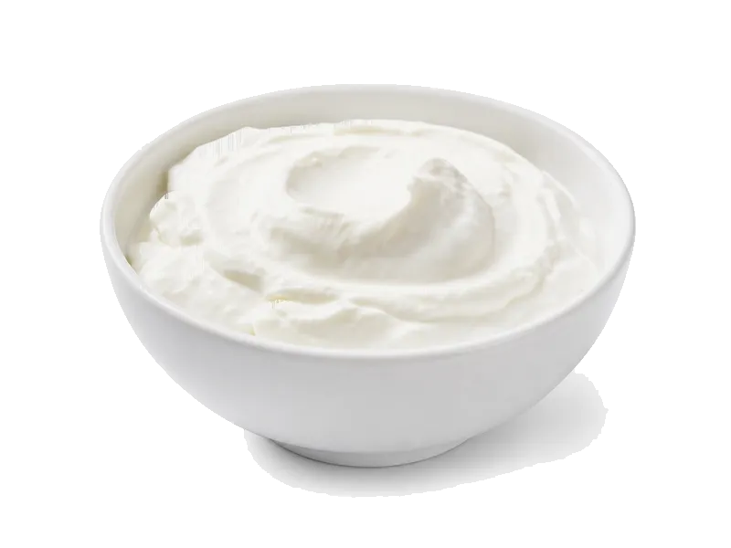

Nabiał i jaja
Jogurt grecki naturalny
Jogurt grecki naturalny to produkt z kategorii Nabiał i jaja. Na 100 g znajdziesz 9 g białka (proteinów), 97 kcal kalorii, 3.6 g węglowodanów oraz 5 g tłuszczu — idealne dane przy zdrowym odżywianiu, odchudzaniu lub budowie masy mięśniowej. Współczynnik ok. 10.8 kcal na 1 g białka pomaga porównać gęstość odżywczą. Gęsty, więcej białka niż zwykły jogurt.
Kalorie97 kcalna 100 g
Białko / proteiny9 g
Węglowodany3.6 g
Tłuszcz5 g
Cena (szac.)~1,53 złza 100 g
Ceny zaktualizowano: maj 2026 (szacunek — ceny w popularnych supermarketach)
Porcja: kubek (150g) — 13.5 g białka, 5.4 g węgli, 7.5 g tłuszczu (kalorie podane wyłącznie na 100 g). Cena porcji (szac.): ~2,29 zł.
Szczegółowe składniki odżywcze na 100 g
| Wartość energetyczna (kalorie) | 97 kcal |
|---|---|
| Białko (proteiny) | 9 g |
| Węglowodany | 3.6 g |
| Tłuszcz | 5 g |
| Tłuszcze nasycone | 3.2 g |
| Tłuszcze nienasycone | 1.8 g |
| Witaminy i minerały | Wapń, Probiotyki, Witamina B2 |
| Współczynnik kcal / 1 g białka | 10.8 |
| Cena produktu (szac. za 100 g) | ~1,53 zł |
| Cena za 100 g białka (szac.) | ~16,96 zł |